Seam carving is a unique way to crop images. Instead of removing content of the image from the sides, seam carving removes a single continuous seam stretching from the top of the image to the bottom (or from left to right if making horizontal seams). This seam is calculated to be the the seam of lowest "energy", meaning that it has the least impact on the image according to the defined energy function, and is therfore the most appropriate to be removed. This method allows cropping to not simply remove the content from the image sides, but the least important features from anywhere inside the image.
The seam carving algorithm works in two phases. First, the energy function determines the importance of each pixel. While there are many different ways to set up an energy function for seam carving, using the gradient is natural because humans are perceptive to change. The energy function (which is presented in the Seam Carving for Content-Aware Image Resizing SIGGRAPH paper by Shai Avidan and Ariel Shamir and is also in the lecture slides) that I used is simply the sum of the absolute values of the x and y derivatives, summed across each color channel. To find the x and y derivatives of the image, I simply convolved the image with [-1 0 1] and [-1 0 1]^T.
The second part of the seam carving algorithm uses the energy function to determine the seam with the least cumulative energy. It uses a dynamic programming technique to find the minimum cumulative sum of the all possible seams. This is done by storing the current cumulative minimum seam values in a cumulative cost matrix while steping down the rows (or columns if making a horizontal seam). Once the cumulative cost matrix is completely filled out, just find the minimum value in the bottom row (or column). This value corresponds to the cumulative energy of all of the pixels in the seam. Since we chose the seam with the smallest cumulative energy, we are removing the least important seam in the image. From there work your way back up the image (choosing the minimum above values in the seam, usually the min of the three pixels above and diagonal) to reconstruct the seam. Luckily, due to the clever storage of the values in the cumulative cost matrix, this dynamic programming part of the algorithm only takes n*m time instead of exponential time.
This seam carving algorithm repeats this 2 part algorithm n times, and reduces your column (or row) count by n simply by removing the n seams.
Below is an example of an image of a soccer game. The first image is the original, and the second image is one of the first seams to be removed (shown in red). Notice how the seam stretches from the top to the bottom of the image, and avoids pixels with high energy (notice how the seam snakes between the rings and the player's cleats). On the right are two images, the first had 101 vertical seams removed and is a good example of successful seam carving. The second has 200 seams removed and is a good example of pushing seam carving a little too far. Artifacts begin to appear. Notice how the two players on the right appear elongated because their bodies have vertical seams cut out of them.
| 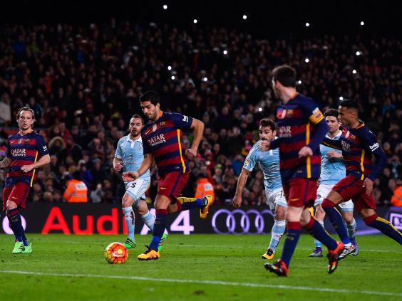 | 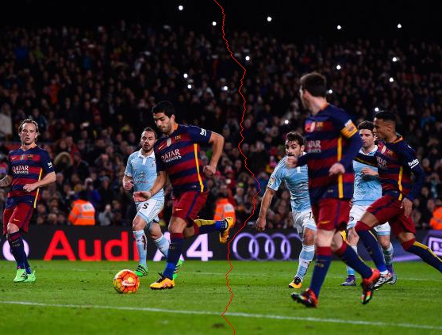 | 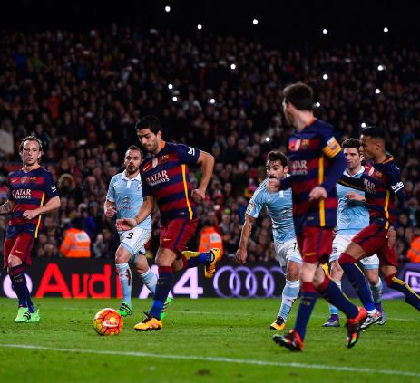 | 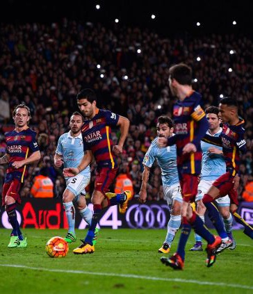 |
| Original Image | Seam to be Removed (in red) | 101 Vertical Seams Removed | 200 Vertical Seams Removed |
Below you can see more successfull results of horizontal and vertical seam carving. The first is my personal favorite of hoodoos in Bryce Canyon. Notice how you can continue to seam carve from the original image on the left without artifacts arising.
| 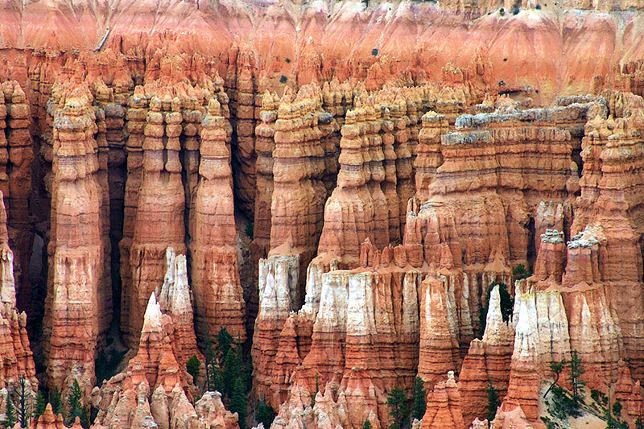 | 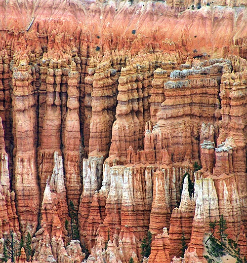 | 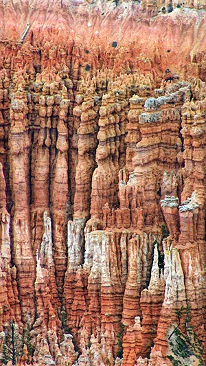 | 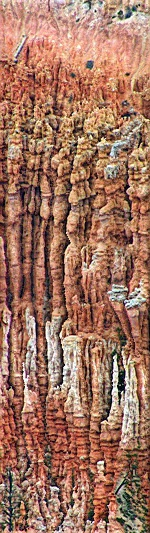 |
| 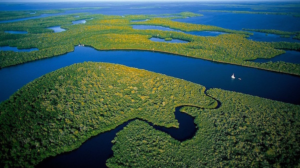 | 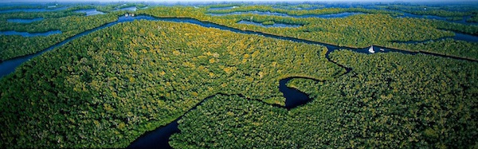 |
| 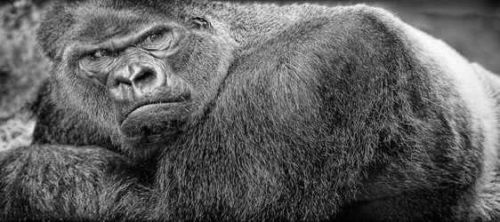 | |
| 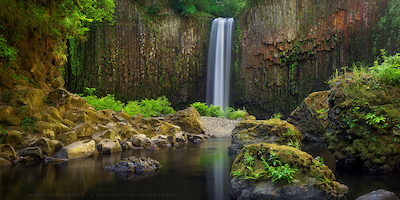 | 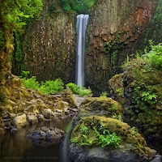 |
| 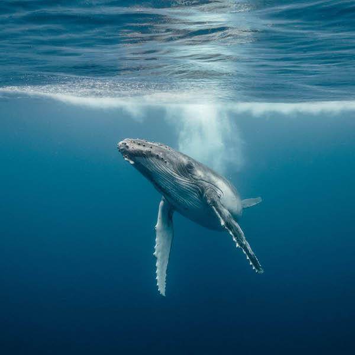 | 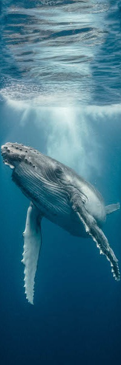 |
Below you can see some unsuccessfull results of horizontal and vertical seam carving. Many of these images are close to being sucessfull seam carvings, but are just a little off. For example, the Chicago skyline deemed the edges between the buildings and the sky as important due to the larger derivative, but this leaves sky artifacts on the overlap between buildings and rounds parts of otherwise square buildings. Once all the extra water between the dolphins was removed, the algorithm removed seams going along the dolphins' bodies. This concept makes sense, but also makes a couple of them look oddly flattened and elongated. The friends seam carving looks great except for the elimination of Ross's body. This occurrs because his black suit blends in with the darkness above him and the dark grass beneath him, therefore creating a seam of little cost from top to bottom through his body which promptly gets removed.
| 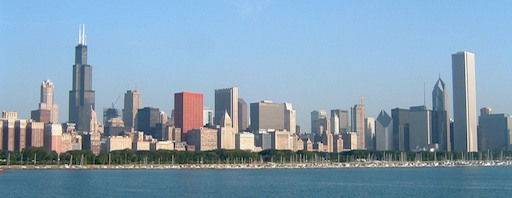 | |
| 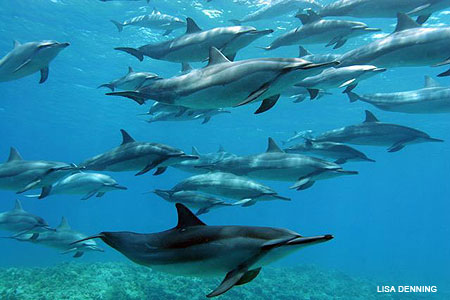 | |
| 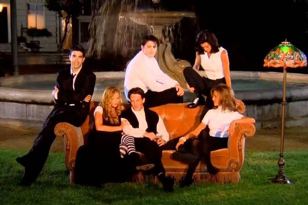 | 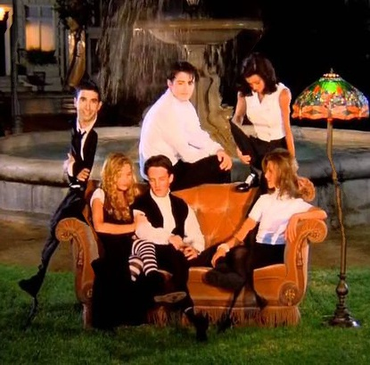 |
Overall, the most important thing I learned from this project lies in the seam carving algorithm. The idea of assigning an energy function to pixels based on derivatives (because humans are perceptive to change) in order to determine their importance is really cool. Furthermore, it was a good review of dynamic programming. I enjoyed watching which seams were removed and seeing how the seams wove their way around important parts of the image.